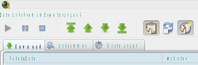
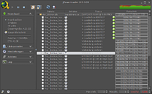
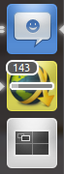

JDownloader
Dieser Artikel wurde für die folgenden Ubuntu-Versionen getestet:
Ubuntu 14.04 Trusty Tahr
Zum Verständnis dieses Artikels sind folgende Seiten hilfreich:
JDownloader  (Java Downloader) ist ein in Java geschriebenes Programm, um automatisch Dateien von sogenannten One-Klick-Hostern herunterzuladen. Das Programm ist OpenSource.
(Java Downloader) ist ein in Java geschriebenes Programm, um automatisch Dateien von sogenannten One-Klick-Hostern herunterzuladen. Das Programm ist OpenSource.
JDownloader verwendet zur Captcha-Erkennung ein eigenes Pluginsystem (JAC) und unterstützt eine Vielzahl von Anbietern und Decryptern. Darüberhinaus können die Containerformate RSDF, CCF und DLC verwendet werden. Bei Bedarf kann das Programm automatisch einen Router-Reconnect durchführen. Zu diesem Zweck nutzt es eine umfangreiche Datenbank. Heruntergeladene Archive können automatisch entpackt werden. Eventuell benötigte Passwörter können vorher eingegeben werden; Standardpasswörter bestimmter Szeneseiten werden automatisch übernommen. Durch ein automatisches Updatesystem wird das Programm nebst Plugins immer auf dem neuesten Stand gehalten.
Es gibt auch eine neuere Version des Programms, welche sich allerdings noch in der Beta-Phase befindet. Mehr dazu ist im Wikiartikel JDownloader 2 zu finden.
Voraussetzungen¶
|  |
| Problem mit OpenJDK 6 |
Um JDownloader nutzen zu können, muss Java mindestens in Version 7 installiert sein. Von den Entwicklern empfohlen wird das unfreie Oracle Java (früher Sun Java), mit dem unter Ubuntu empfehlenswerten OpenJDK funktioniert es ebenso problemlos. Mit GNU Java funktioniert das Programm leider gar nicht.
Installation¶
JDownloader ist nicht in den offiziellen Paketquellen enthalten. Daher muss entweder ein "Personal Package Archiv" (PPA) als Fremdquelle oder die manuelle Installation verwendet werden.
PPA¶
Das PPA muss erst freigeschaltet [4] werden.
Adresszeile zum Hinzufügen des PPAs:
ppa:jd-team/jdownloader
Hinweis!
Zusätzliche Fremdquellen können das System gefährden.
Ein PPA unterstützt nicht zwangsläufig alle Ubuntu-Versionen. Weitere Informationen sind der  PPA-Beschreibung des Eigentümers/Teams jd-team zu entnehmen.
PPA-Beschreibung des Eigentümers/Teams jd-team zu entnehmen.
Damit Pakete aus dem PPA genutzt werden können, müssen die Paketquellen neu eingelesen werden.
Falls es Probleme bei der Authentifizierung des PPAs gibt, kann mit folgendem Befehl noch der Key des PPAs importiert werden:
sudo apt-key adv --keyserver keyserver.ubuntu.com --recv-keys 6A68F637
Nach dem Aktualisieren der Paketquellen kann das folgende Paket installiert werden:
jdownloader-installer (ppa)
 mit apturl
mit apturl
Paketliste zum Kopieren:
sudo apt-get install jdownloader-installer
sudo aptitude install jdownloader-installer
Manuell¶
Das Programm kann von der Homepage  heruntergeladen und anschließend in ein beliebiges Verzeichnis entpackt [1] werden. Tipps und Anleitungen zum selber kompilieren finden sich im Supportforum .
heruntergeladen und anschließend in ein beliebiges Verzeichnis entpackt [1] werden. Tipps und Anleitungen zum selber kompilieren finden sich im Supportforum .
Hat man das Programm manuell installiert, empfiehlt es sich, vor dem ersten Start das Programm dem Hauptmenü hinzuzufügen. Bei der Installation über das PPA wird der Menüeintrag automatisch angelegt. Hierzu kann ein Menüeditor verwendet werden. Als Befehl kann folgender Code verwendet werden:
bash -c "java -Xmx512m -jar /Pfad/zum/Verzeichnis/JDownloader.jar"
Der Pfad zur Programmdatei muss entsprechend den eigenen Bedürfnissen angepasst werden. Der Parameter -Xmx512m gibt an, wie viel Arbeitsspeicher Java maximal verwenden darf. Je nach System kann der Wert auch angepasst werden, wobei ein zu geringer Wert Probleme verursachen kann. Um zu verhindern, dass JDownloader Config-Dateien und Updates direkt im Homeverzeichnis des Benutzers ablegt, sollte außerdem der Arbeitsordner entsprechend angepasst werden.
Wer ein dazugehöriges Icon sucht, wird unter anderem hier fündig.
{kind=link}
Hinweis:
Sollte JDownloader nicht starten und beim Start im Terminal mit einer NullPointerException abbrechen, so kann es helfen, die oben genannte Option -Xmx512m zu setzen.
Die nachfolgende Beschreibung bezieht sich ausschließlich auf die bereits kompilierte Endanwender-Version.
Konfiguration¶

Der erste Start¶
Beim ersten Start erfolgt zunächst ein kurzer Installationsdialog, bei dem man bereits das zukünftige Downloadverzeichnis auswählen kann. Anschließend werden Aktualisierungen heruntergeladen. Danach wird eine Zusammenfassung der Updates angezeigt, welche unten mit "OK" bestätigt werden muss.
Bevor das Programm verwendet werden kann, müssen einige Einstellungen geändert werden. Der Konfigurationsdialog befindet sich unter: "Extras -> Konfiguration". Um alle Optionen auswählen zu können, muss die Größe des Konfigurationsfensters angepasst werden.
Einstellungen¶
Nach dem Start befinden sich bereits 3 Addons in der Downloadliste, wovon zwei speziell für Windows sind. Diese können getrost aus der Downloadliste gelöscht werden. Damit sie beim nächsten Start nicht wieder hinzugefügt werden, sollte die Auswahl im Paketmanager überprüft werden. Diesen findet man unter: "Extras -> Konfiguration -> Paketmanager". Hier kann man je nach Bedarf auch weitere nützliche Pakete auswählen, die zusätzliche Funktionalität bereitstellen.
Anschließend müssen die AGB der One-Klick-Hoster akzeptiert werden - anderenfalls ist kein Download möglich. Hierzu muss im Dialog "Extras -> Konfiguration -> Host Plugins" hinter jedem erwünschten One-Klick-Hoster ein Häkchen gesetzt werden. Dabei können die verschiedenen Hoster in eine Reihenfolge gebracht werden, was bei mehreren Mirrors zu einer bevorzugten Priorisierung der höher gestuften Hoster führt.
Danach sollte im Dialog "Extras -> Konfiguration -> Reconnect" eine geeignete Reconnect-Methode ausgewählt werden. Am einfachsten geht dies durch Auswahl des verwendeten Routers und Eingabe der relevanten Routerinformationen IP-Adresse / Login / Pass. Ob die gewählte Methode funktioniert, kann durch einen Klick auf "Test Reconnect" ermittelt werden. Wenn alles funktioniert, kommt nach ca. 30 Sekunden eine Meldung, dass der Reconnect erfolgreich war. Sollte der betreffende Router nicht in der derzeit 1305 verschiedene Router umfassenden Datenbank sein, kann auch ein eigenes Skript für den Reconnect erstellt werden. Hilfestellungen hierzu gibt es im Supportforum .
Wer über einen Nutzeraccount bei bestimmten One-Klick-Hostern verfügt, ist in der Regel nicht darauf angewiesen, einen Router-Reconnect zu nutzen. In diesem Fall ist es ausreichend, die Logindaten bei den Einstellungen zum jeweiligen Hosterplugin einzutragen. Mit einem Häkchen bei "Premium" in der Programmoberfläche wird die Nutzung des Accounts aktiviert. Mehrere Accounts lassen sich unter "Plugins -> Hoster -> Premiumaccounts" verwalten.
Firefox-Plugin¶
Das Firefox-Plugin kann im JDownloader unter "Extras -> Konfiguration -> Addon-Manager -> Installation und Updates" heruntergeladen werden. Danach befindet es sich im Verzeichnis <jDownloader-INSTALLATIONSORDNER>/tools/jdownff.xpi. Die Datei jdownff.xpi muss nun aus dem Firefox heraus geöffnet werden. Dies geschieht über "Datei -> Datei öffnen". Dann wählt man die jdownff.xpi aus und folgt den Anweisungen.
Nach der Installation kommt man in das Einstellungsfenster des JD Firefox-Plugins. Sollte dies nicht der Fall sein, kann man das Einstellungsfenster aus dem Firefox über "Extras -> Add-ons" aufrufen. Unter den Add-ons findet man dann ein "jDownFF", wo man dann auf "Einstellungen" klicken kann. Im Einstellungsfenster gibt es zwei Pfade, die angegeben werden müssen:
Der Pfad zu Java. Dieser ist unter Ubuntu Linux in der Regel immer /usr/bin/java.
Der Pfad zum JDownloader bzw. zur JDownloader.jar. Dieser Pfad kann natürlich bei jedem anders sein. Das kommt darauf an, wo man das JDownloader Verzeichnis hin entpackt hat. Ein sinnvoller Pfad wäre z.B. /home/BENUTZER/jDownloader/JDownloader.jar.
Diese beiden Pfade müssen richtig eingestellt sein, damit das Plugin funktioniert. Die anderen Einstellungen kann man nach Belieben vornehmen.

Unity-Integration¶
Es steht ein weiteres PPA zur Verfügung, das einen Unity Launcher inkl. Download-Fortschrittsanzeige beinhaltet.
Adresszeile zum Hinzufügen des PPAs:
ppa:narfss/proyectobs
Hinweis!
Zusätzliche Fremdquellen können das System gefährden.
Ein PPA unterstützt nicht zwangsläufig alle Ubuntu-Versionen. Weitere Informationen sind der PPA-Beschreibung des Eigentümers/Teams narfss zu entnehmen.
Damit Pakete aus dem PPA genutzt werden können, müssen die Paketquellen neu eingelesen werden.
Nach dem Aktualisieren der Paketquellen kann das folgende Paket installiert werden:
unity-jdownloader (ppa)
mit apturl
Paketliste zum Kopieren:
sudo apt-get install unity-jdownloader
sudo aptitude install unity-jdownloader
Hinweis:
Anscheinend steht das Paket derzeit nicht mehr für alle Architekturen zur Verfügung, es funktioniert aber für alle Architekturen. Will man das Paket trotzdem installieren, muss das Paket von der Downloadseite manuell heruntergeladen werden und per Doppelklick auf die heruntergeladene Paketdatei unity-jdownloader*_all.deb installiert werden.
Nun muss der Launcher noch in das Unity/Docky Menü eingebunden werden. Man sucht nach jdownloader und schiebt den Launcher Unity JDownloader in das Unity-Menü. Der alte Launcher von JDownloader kann dann ggf. entfernt werden. Damit ergibt sich nun auch nicht mehr das Problem "Doppelte Icons im Unity/Docky Menü".
Damit die Download-Fortschrittsanzeige funktioniert, muss unter JDownloader die Erweiterung Remote Control aktiviert sein.
Problembehebung¶
Reconnect und VoIP¶
Ein normaler Reconnect unterbricht, wenn PVC nicht funktioniert, auch das über Internet geführte Telefongespräch.
Abhilfe schafft das Programm "FritzBoxVoipReconnect", welches aber nur funktioniert, wenn der Internetzugangs mittels einer Fritz!Box hergestellt wird
Installation¶
Zuerst müssen die benötigten Dateien erst einmal heruntergeladen werden. Es werden die Dateien fbvoiprc.lip.php, fbvoiprc.php und fbvoiprc.sh benötigt. fbvoiprc.sh muss ausführbar sein.[5] In welchem Ordner die Dateien liegen ist prinzipiell egal. Wichtig ist nur, dass alle drei im gleiche Ordner sind.
Programm startet nicht¶
Falls JDownloader nicht startet, und bei einem Aufruf im Terminal mit dem Fehler
Invalid or corrupt jarfile jdupdate.jar
abbricht, hilft es das Verzeichnis /home/BENUTZER/.jdownloader zu löschen. Dies löscht alle Einstellungen, die in jDownloader vorgenommen werden, und führt dazu, dass alle Konfigurationsdateien neu geschrieben werden.
Aktualisierung des Programms¶
Falls der JDownloader nach längerer Nichtbenutzung nicht mehr vollständig startet, also auch keine Aktualisierung durchführt, kann es helfen, diese manuell aufzurufen. Das gelingt mit dem Befehl[2]
java -Xmx512m -jar /Pfad/zum/Verzeichnis/jdupdate.jar
Danach sollte JDownloader wieder wie gewohnt starten.
Problembehebung bei NVidia Grafikkarten und KDE¶
Falls JDownloader unter Kubuntu den PC einfrieren lässt und ein Grafikfehler kommt, kann man mit folgendem Skript
1 2 3 4 5 6 | pkill kwin pkill plasma-desktop nice -n 10 jdownloader & sleep 35 kwin & plasma-desktop & |
dennoch starten, ohne dass der PC einfriert. Dann deaktiviert man JDLightTray unter "Settings -> Addons". Anschließend beendet man JDownloader und kann ihn dann wieder ganz normal starten. Eventuell ist es nötig, auch die Java-Version auf Sun Java zu stellen. Dies geschieht mit folgendem Befehl[3]:
sudo update-alternatives --config java
Doppelte Icons im Unity/Docky Menü¶
Es ist zwar möglich den JDownloader-Starter im Unity-Menü hinzuzufügen, und das Programm darüber zu starten. Allerdings wird das Java-Window nicht auf das Icon gemappt, sondern es öffnet sich ein zweites Symbol (siehe Bild rechts).
Um das zu verhindern muss die jdownloader.desktop Datei unter /usr/share/applications/ erweitert werden:
1 2 3 4 5 6 7 8 9 | [Desktop Entry] Name=JDownloader Categories=Network;FileTransfer Exec=jdownloader TargetEnvironment=Unity Icon=jdownloader Terminal=false Type=Application StartupWMClass=jd-Main |
Anschließend einmal Ab- und wieder neu Anmelden!
Problembehebung Umlaute und Sonderzeichen in Dateinamen (ungültige Kodierung)¶
Das mitgelieferte Unrar ist leider veraltet und ersetzt beim Entpacken sämtliche Dateinamen mit Umlauten und Sonderzeichen mit der Endung "(ungültige Kodierung)" und die Umlaute werden nicht richtig dargestellt.
Problembehebung: Ersetzen mit dem systemeigenen Unrar und Link setzen:
unrar (multiverse)
mit apturl
Paketliste zum Kopieren:
sudo apt-get install unrar
sudo aptitude install unrar
cd ~/.jdownloader/tools/linux/unrar mv unrar unrar.org ln -s /usr/bin/unrar-nonfree unrar
Funktion "Zielordner öffnen" funktioniert unter Unity nicht¶
Standardmäßig funktioniert diese Funktion unter Unity nicht, weil JDownloader Dolphin benutzen will (Standard in KDE). Abhilfe verschafft die Verlinkung zu Nautilus.
mkdir ~/bin cd ~/bin ln -s /usr/bin/nautilus dolphin
Anschließend einmal Ab- und wieder neu Anmelden!
Shutdown-Plugin beendet nur den jDownloader¶
Da der shutdown-Befehl nur mit sudo ausgeführt werden kann, wird nur das Programm beendet, das System aber nicht heruntergefahren. Um Abhilfe zu schaffen müssen die Ausführungsrechte geändert werden.
Dazu die Datei sudoers mit dem Befehl
sudo visudo
öffnen. Hier nun die Zeile
BENUTZERNAME ALL=NOPASSWD: ~/.jdownloader/shutdown
eingefügen, wobei BENUTZERNAME durch den eigenen Benutzernamen ersetzt werden muss. Nun kann der shutdown-Befehl (auch in der Konsole) auch ohne sudo ausgeführt werden.
Tipps¶
Der Ressourcenverbrauch kann etwas reduziert werden, indem das Logginglevel auf OFF gesetzt wird.
Die CPU-Last unter GNOME sinkt stark, wenn man im JDownloader unter "Einstellungen -> Benutzeroberfläche -> Style" den Style "Light(GTK)" einstellt. Dafür muss die Style-Liste nach oben gescrollt werden; im Standard-Style sind die Scrollbalken nur schlecht sichtbar und können leicht übersehen werden.
Es kann hilfreich sein, die Zwischenablage auf geeignete Links zu überwachen. Hierzu reicht ein Klick auf das entsprechende Symbol in der Programmleiste. Bei der Bearbeitung sicherheitsrelevanter Daten sollte diese Funktion jedoch deaktiviert werden, da der gesamte Inhalt der Zwischenablage in einem Logfile gespeichert wird.
Sollte JDownlader beim Hin- und Herziehen auf dem Bildschirm ruckeln, hilft es unter "Einstellungen -> Grundlagen -> Benutzeroberfläche" den Haken bei der Option "Fensterdekoration anzeigen" heraus zu nehmen.
- Erstellt mit Inyoka
-
 2004 – 2017 ubuntuusers.de • Einige Rechte vorbehalten
2004 – 2017 ubuntuusers.de • Einige Rechte vorbehalten
Lizenz • Kontakt • Datenschutz • Impressum • Serverstatus -
Serverhousing gespendet von